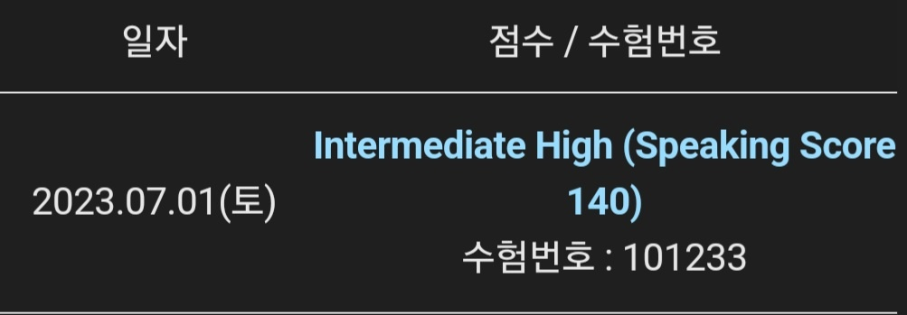

part1. 발음 어려운 단어
Affordable (어포러블)
Appliances (어플라이언시스)
Property (프로펄리)
Executive (이그제키디브??)
competitive (컴페더디브)
Alternate (얼터너트)
Purchase (펄쳐스)
Record (V 리코드, N 레코드)
Interior
Approximately
Repersentaitve (레프레젠테티브)
Hesitate
Applause (어플로우즈)
Attorney (어 thㅗㄹ 니)
reward
Moderate. (머더리트)
Pedstrians (퍼데스트리언스)
quarter/quarterly
Humid / Humidity
Groceries (그로우서리스)
Tremendous (트레멘데스)
Nutritious (뉴트리셔스)
Exterior
Cuisine (쿠이진)
Maintenance (메인티넌스)
Awareness (어웰너스)
Exothic (이그조릭)
Resume (레저미)
Temporaray / Temporarily (템포러ㄹ리, 템포렐러리)
Lodging (로징)
Unforgettable (언폴게러블)
Renowned (리노운ㅌ)
Appropriate (어프러푸레이트)
Strategies (스트레드지스)
Procedure
Organize / Organization (올게나이즈, 올가니제이션)
informative (인폴메티브)
Associate
Sculpture (스컬ㅍ쳐)
Immediate / Immediately (이미디어트, 이미디엍리)
Region (리즌)
Vehicle (비이클)
Creative. (크리에이리브)
Latest (레이리스트)
cashier (캐시얼)
Modern (모어런)
Contemporary
Currently(커ㄹㅌ리)
Cooperation
Environmental
Reception (리셒션)
Interested / Interesting
part 3, 5 만능문장 템플릿
1. 경험 & 교육
They can learn new things (such as ~, about ~)
They can meet new people and expand their network \(\to\) (회사 인턴십, 워크숍, 다른부서하고 일할 때)
They can have a lot a experience and broaden their perspectives. \(\to\) (박물관, 해외 여행, 회사 인턴십, 워크숍, 다른부서하고 일할 때)
They can’t make good decisions because they are not mature enough.
It makes me happy and I can have a great experience.
It makes me happy and I can forget about my worries.
They provide a happy environment and a pleasant experience.
It relives my stress. I’m stressed out these days. So, I need this. (발음 듣기)
It relives their stress and they can relax.
It’s good for their physical/mental health.(템플릿 발음)
It’s my favorite thing to do.
2. 집중
They will be distracted. (by others) \(\to\) (스마트폰, 그룹스터디 등등)
They can’t focus on their studies/works \(\to\) (스마트폰, 그룹스터디 등등)
They can’t get good grades at school. \(\to\) (스마트폰, 그룹스터디 등등)
They fall behind in class. \(\to\) (스마트폰, 그룹스터디 등등)
They can’t work efficiently \(\to\) (스마트폰, 그룹스터디 등등)
I feel more comfortable and I can focus better.
I don’t have to waste time waiting for other people.(others) \(\to\) 혼자 쇼핑
3. 돈, 시간
It’s cheaper, so I can save money. \(\to\) (연봉, 보너스)
The price is reasonable. \(\to\) (연봉, 보너스, 템플릿발음)
The cost of living is too high, so employees can’t make a living (without bonus, a high salary) \(\to\) (연봉, 보너스)
I can get a high salary.
It’s waste of money/time.
That’s a good investment because It makes lives better.
I’m a student so my budget is tight.
I can’t afford to buy expensive things.
I don’t want to waste (too much) money(time) on that.
I’m a student so I’m busy with my school work.
I don’t have much time.
It’s faster, so I can save time.
4. 혼자 & 같이 & 기술
They can focus better. (if, when ~)
They can set their own schedule.
They can have/feel more freedom/comfortable. (at home) \(\to\) (혼자 일할 때)
It’s fun and entertaining. so I don’t get bored.
They can get a lot of useful information (from my friends, books, on the Internet) and share it with others.
I think it’s more fun to do things in a group.
I can meet new people and make friends (expand their network.)
I can save time because I don’t have to waste time going out.
They can do everything anytime anywhere on their smartphones.
They can communicate with their friends anytime anywhere on social media.
It’ faster and convinient.
There is a lot of inaccurate information on the internet so it’s not reliable.
It’s reliable, so the information is more trustworthy.
It is very distracting for student because they can’t focus on their studies/work.
i can get responses right away.
I can understand the feeling of speaker more accurately. \(\to\) (대면 수업, 일대일 강의)
It is more personal, and bulids a closer relationship.
It causes less misunderstanding.
They can make a friendly atmosphere.
They can communicate with others better.
They can be good team players and make good relationships with others.
5. 좋은 성품, 성격
They can have a good reputaion.
They can be very influential. (템플릿 발음)
They can motivate others.
6. 지식, 능력, 재능
Everything is always chainging and There is a lot of competition.
They face a lot of challenges and difficulties. (템플릿 발음)
He is able to handle a varity of situation due to his creativity. (템플릿 발음)
They have a lot of experience / knowledge.
\(\divideontimes\) They can give me some good advice.
7. 업무 환경 & 기업 성공
Employees can work more efficiently and productively (if company offer a high salary)
Employees can be more satisfied with their jobs.
It can make a better work environment.
Customers will feel satisfied and remain loyal.(They will become regular customer.)
It will attract more customers.
The business will be more successful.
people frequently use it so it will be very effective.
It has great facilities.
It’s a well-liked place so people love it.
\(\divideontimes\) It can develop healthy/unhealthy habits. (건강에 안좋은 음식 문제?)
8. 환경
It’s good for the enviorment.
Pollution is a serious issue these days.(if ~, it can makes a cleaner environment)
We will able to protect the environment.
9. 기타
They are too old/outdated so I think it’s good to have new ones.
If we have more stores here, it would be more convinient.
It’s very necessary for me. (템플릿 발음)
It’s popular item so people will love it.
I like to try new things.
It’s a good gift (템플릿 발음).
it has sentimental value.
It’s part of my routine.
It’s my habit.
I really liked it.
It was great/awesome.
Part 2. 실전문제
- 나만의 공식 만들자….
Part3. 실전문제
- 템플릿암기가 아직 미숙하다…. 자다가다 나올정도로 뱉어보자.
Part 4. 실전문제
- part 4 템플릿 암기, 질문 의문사 키워들 잘듣자…
Part 5. 실전문제
set 8 : 문제를 보고 답을 찾는 습관들이자.
set 10 : part4 만능문장도 한번 섞어보기
set 11 : 문제를 여전히 활용안한다…
set 15 : 다시다시!!
set 16 : 건강에 관한 만능문장을 이용하자…
set 18 : part 3!
set 30 : I dont have to waste time 문구 이용해서 풀어보기
결과
